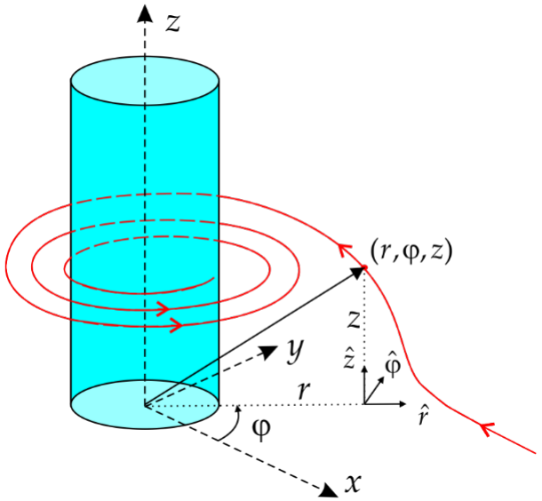
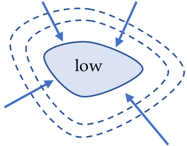
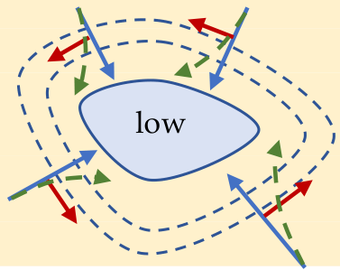
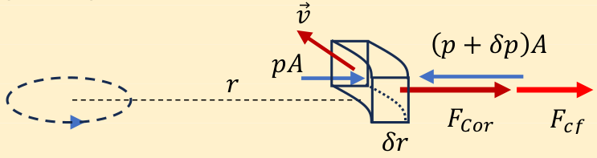
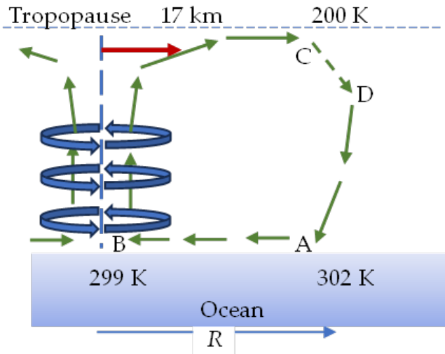

허리케인(hurricane)은 저기압 중심(허리케인의 눈)을 가진 강한 열대 폭풍으로, 그 주위를 공기 덩어리가 빠른 속력으로 회전한다. 이러한 극한 기상 현상을 통틀어 사이클론(cyclone)이라 부른다. 서반구에서는 허리케인, 아시아에서는 태풍(typhoon)이라 부른다. 이름과 관계없이 허리케인은 따뜻한 바닷물 위에서 생긴다.

허리케인의 눈을 향한 공기 운동의 역학을 더 잘 이해하기 위해 이상화된 소용돌이(vortex), 즉 원통형 소용돌이를 생각하자. 간단히 하기 위해 눈의 벽(eye wall)이 원통형이고 수직이라고 생각하고, 그 대칭축을 원통 좌표계(단위 벡터 $\hat r$, $\hat\varphi$, $\hat z$)의 축 Oz로 잡는다. 공기는 눈의 벽을 향해 수평으로 흐르므로, 눈의 벽 바깥에 있는 임의의 유체 입자(fluid particle)의 속도는 $\vec v=\hat rv_r+\hat\varphi v_\varphi+\hat z0$이다(옆 그림 참조).
참고: 유체역학에서 유체 입자란 입자로 간주할 수 있을 만큼 전체 유체 부피보다 훨씬 작고, 유체의 거시적 성질을 모두 포함할 만큼 유체 분자보다 훨씬 큰 유체 부피를 말한다.
소용돌이의 바깥 영역에서 축으로부터 거리 $r$에 있는 유체 입자의 속도에 대한 수식을 구하라. 유체 입자는 축으로부터 거리 $r_0$에서 지름 방향 속력 $v_0$로 바깥 영역에 들어온다. 소용돌이의 바깥 영역에서 공기 흐름은 회전 흐름(rotational)이 아니다.
풀이:
임의의 높이 $h$를 가진 원통 면을 사용하면 연속 방정식(continuity equation)은
이므로
또는 벡터로
이다. 흐름이 비회전적(irrotational)이므로 바깥 영역 어디에서나 $v_\varphi=0$이기 때문이다.
바깥 영역과 눈의 벽 사이에는 고리 모양 영역(annulus)이 있으며, 여기서 유체 입자의 속도는 방위각 성분 $\left(v_\varphi=\dfrac{C}{r}\right)$을 가지면서 $v_r$은 바깥 영역에서와 같은 지름 의존성을 유지한다. $C$는 양의 알려진 상수이다.
고리 영역에서 유체 입자의 궤적 방정식을 유도하라. 유체 입자가 바깥 영역에서 고리 영역으로 넘어가는 것은 $r=r_1<r_0$에서 일어난다.
풀이:
유체 입자의 속도는 궤적에 접하므로, 미소 변위 $d\vec s$를 잡으면
이다.
이므로 위의 벡터 방정식은
가 된다. 이로부터
또는
을 얻는다. $r=r_1$일 때 $\varphi=0$으로 택하면 0.1 pt, 적분 상수는
이다. 결과적으로
이며, 이는 고리 영역에서 궤적이 로그 나선(logarithmic spiral)임을 뜻한다.
보통 대기 중의 온도 차이는 압력 차이를 만들고, 압력에 의한 힘이 대기의 공기를 움직여 우리가 흔히 바람이라 부르는 것을 만든다. 우리는 이 공기 순환을 지구에서 관찰하는데, 지구는 일주 자전(각속력 $\omega=7{,}29\cdot10^{-5}\ \text{rad/s}$) 때문에 비관성 기준계(non-inertial reference frame)이다. 이러한 기준계에서 뉴턴의 운동 제2법칙을 형식적으로 쓰려면 상호작용에서 생기는 힘들에 몇 가지 관성력(inertia force)을 더해야 한다. 그중 여기서 관심 있는 것은 코리올리 힘(Coriolis force)이다. 그 식은 $\vec F_{Cor}=-2m\vec\omega\times\vec v_{rel}$이며, 여기서 $\vec v_{rel}$은 비관성 기준계에 대한 물체의 상대 속도이다. 지구의 각속력은 꽤 작지만, 속력이 커지면 코리올리 힘의 값은 무시할 수 없게 된다.

옆의 그림은 저기압 영역, 몇 개의 등압선(점선), 바람의 방향을 나타내는 몇 개의 화살표를 대략적으로 나타낸 것이다. 이 그림은 지구의 자전을 고려하지 않았다. 이 그림이 루마니아 어딘가의 실제 상황을 나타낸다고 상상하라(간단히 하기 위해 북위를 $\lambda=45^\circ$로 생각하라).
위의 그림을 다시 그리고 각 화살표 위에 코리올리 힘의 방향을 그려라. 그 결과로 코리올리 힘의 영향을 받은 공기의 흐름(화살표)을 다시 그려라.
풀이: 0.3 + 0.2 pt

바람의 속력이 커질수록 그 방향은 코리올리 힘에 의해 점점 더 바뀌며, 결국 유체 입자는 코리올리 힘이 압력에 의한 힘과 비슷한 값을 갖는 닫힌 고리를 따라 나선을 그리며 돈다. 이런 형태의 원 운동 흐름은 허리케인의 눈의 벽 가까이, 고리 영역에서 관찰된다.
눈의 축으로부터 거리 $r$에서 일정한 속력으로 축 주위를 도는 작은 부피 $\delta V$의 유체 입자를 생각하자(공기의 밀도는 $\rho=1.29\ \text{kg/m}^3$이다).
공기의 점성을 무시하고 유체 입자의 운동 방정식을 유도하여, 바람의 속력을 압력 기울기 $\dfrac{\delta p}{\delta r}$, 거리 $r$, 공기 밀도 $\rho$, 지리적 위도 $\lambda$, 지구의 각속력 $\omega$의 함수로 나타내는 수식을 구하라.
풀이:
질량이
인 유체 입자에 대해

뉴턴의 제2법칙(lex secunda)은 다음 꼴이다.
또는
운동 방정식을 정리하면
이고, 그 해는
아래 표는 허리케인의 이른바 사피어–심프슨 강도 등급(Saffir-Simpson intensity scale)이다.
| 등급 | 최저 중심 해면 기압/kPa | 최대 풍속/(m/s) | 피해 |
|---|---|---|---|
| 1 | ≥ 98.0 | 33 – 42 | 최소 (minimal) |
| 2 | 97.9 – 96.5 | 43 – 49 | 중간 (moderate) |
| 3 | 96.4 – 94.5 | 50 – 59 | 광범위 (extensive) |
| 4 | 94.4 – 92.0 | 60 – 69 | 극심 (extreme) |
| 5 | < 92.0 | ≥ 70 | 재앙적 (catastrophic) |
바람이 허리케인으로 분류되기 위해, 저기압 영역의 중심에서 25 km 떨어진 곳에서 공기 압력 기울기의 최솟값을 계산하라.
풀이:
운동 방정식으로부터
이다. $v=33\ \dfrac{\text{m}}{\text{s}}$일 때 압력 기울기의 값은

허리케인의 경로를 예측하는 것은 그리 어렵지 않지만, 그 강도를 예측하는 것은 최근까지 어려웠다. 본질적으로 열역학적인 새 모형은 정확한 결과를 줄 수 있다.1 본질적으로 허리케인은 열기관(heat engine)으로 작동하여, 바다 표면에서 흡수한 열의 일부를 허리케인 바람의 역학적 에너지로 바꾼다. 그 단계들을 간단히 요약하면 다음과 같다.
1. 공기의 흐름(바람)은 허리케인의 눈을 향해 나선을 그리며 들어가는 동안 바다 표면에서 열을 흡수한다(바다 표면의 물이 증발하여 그 증발 잠열과 함께 바람에 실려 간다). 구간 A – B는 본질적으로 온도 $T_1\cong300\ \text{K}$에서의 등온 과정이다.
2. 눈의 벽에 도달하면 습한 공기는 약 17 km까지 빠르게 상승한다(구간 B – C).
3. 짧은 등온 구간(C – D) 동안 바람은 우주 공간으로 열을 전달하고 공기는 건조해진다(온도는 $T_2\cong200\ \text{K}$이다).
4. 건조한 공기는 바다 표면을 향해 빠르게 내려온다(구간 D – A).
1 이 열역학적 모형의 저자는 MIT의 Kerry Emanuel 박사이다.
위의 정보를 사용하여, 바다 표면에서 흡수되는 열의 비율이 $\dfrac{dQ_1}{dt}>0$이라고 할 때 바다에서 바람의 운동 에너지로 전달되는 에너지의 최대 비율을 구하라.
풀이:
1. 구간 A – B: 등온 과정($T_1\cong300\ \text{K}$)으로, 이 동안 바람은 바다로부터 비율 $\dfrac{dQ_1}{dt}$로 열을 흡수한다.
2. 구간 B – C: 본질적으로 단열 과정이다. 빠른 과정이기 때문이다(바람의 속력은 허리케인의 눈의 벽에서 가장 크다). 고도가 높아질수록 압력이 줄어들므로 공기는 단열 팽창하며 식는다.
3. 구간 C – D: 등온 과정($T_2\cong200\ \text{K}$). 습한 공기의 온도가 떨어지면서 그 안의 수증기가 비로 응결하여 기화 엔탈피(잠열)를 방출하며, 그 대부분은 우주 공간으로 복사된다. 방출되는 열의 비율은 $\dfrac{|dQ_2|}{dt}$이다.
4. 구간 D – A: 건조한 공기의 단열 압축.
한 순환 동안, 바다에서 흡수한 엔탈피의 일부는 비율 $\dfrac{dW}{dt}$로 허리케인 바람의 역학적 에너지로 바뀐다. 따라서 열역학 제1법칙에 따르면
카르노 정리(Carnot’s theorem)로부터
이므로
허리케인에서 바람의 역학적 에너지는 바람의 마찰 때문에 열로 바뀌며, 그 거의 전부가 바다 표면에서 일어난다. 이 열은 다시 바다 표면에서 바람이 열을 흡수하는 비율에 기여한다.
전체 공기 순환은 허리케인 눈의 축을 대칭축으로 하고, 높이가 17 km, 원형 밑면의 반지름이 $R=100\ \text{km}$인 원통형 부피 안에서 일어난다.
$dQ_{10}/dt$가 증발에 의해 바다 표면에서 열이 방출되는 비율이라면, $\dfrac{dQ_{10}}{dt}$을 주어진 온도, 공기 밀도, 바람의 속력과 관련짓는 식을 써라. 크기가 1 정도인 무차원 비례 계수는 모두 1로 놓아라.
풀이:
문제에 주어진 정보에 따르면
이므로
이다.
이고
[다른 방법으로, 바다 표면에서 바람은 속도의 수직 성분을 잃으므로 0.1 + 0.1 + 0.1 pt\[F_r=\left|\frac{dm(0-v)}{dt}\right|=\left(\frac{dm}{dt}\right)v,\] 이고 0.1 + 0.1 pt\[\delta\left(\frac{dm}{dt}\right)=\rho\delta\left(\frac{dV}{dt}\right)=\rho v\cdot\delta S\] 이다.]
결과적으로
이고
참고: 위의 추론으로부터 $dQ_{10}/dt=|dQ_2|/dt$를 얻는데, 이는 바다 표면에서 허리케인 바람이 흡수한 기화열이 물이 응결하는 더 높은 고도에서 방출됨을 뜻한다. 이 열은 지구 대기 밖으로 복사된다. 따라서 수증기의 증발과 응결은 바다에서 더 높은 고도로 열을 운반하여 그곳에서 우주 공간으로 방출하는 메커니즘이다. 그렇지 않다면 열이 다시 바람으로 전달되어 바람이 극도로 강해질 것이다!
유입되는 건조한 공기의 비엔탈피(specific enthalpy, 단위 질량당 엔탈피)를 $h$로 나타내자(일정한 압력에서 엔탈피 변화는 계가 주위와 주고받는 열이다). 또 바다 표면 바로 위의 습한 공기의 비엔탈피를 $h^*$로 나타내자(증발 잠열은 실제로 증발 엔탈피이다).
$\dfrac{dQ_{10}}{dt}$을 주어진 비엔탈피와 관련짓는 수식을 유도하라. 크기가 1 정도인 무차원 비례 계수는 모두 1로 놓아라.
풀이:
문제의 정보에 따르면
이고, 여기서
이며
따라서
정상 상태 조건(바닷물 표면의 주어진 점에서 국소 압력과 온도가 일정)에서 0 °C에서 수증기의 비엔탈피는 $h_{w0}=2437\ \text{kJ/kg}$이고, 물의 비열은 $c_{p,w}=4.18\ \dfrac{\text{kJ}}{\text{kgK}}$이다. 물 표면 위의 공기는 수증기로 포화되어 있다. 공기의 몰 질량은 $M_a=28.97\ \text{g/mol}$, 300 K에서 물의 포화 증기압은 $p_s=3.561\ \text{kPa}$, 대기압은 101.3 kPa이다. 수증기는 이상 기체로 간주할 수 있다.
$\dfrac{dQ_{10}}{dt}$에 대해 유도한 두 식이 눈의 반지름보다 큰 모든 반지름 $R$ 값에 대해 성립한다고 가정하고, 최대 풍속에 대한 식을 유도하고 그 수치를 계산하라.
풀이:
$\dfrac{dQ_{10}}{dt}$에 대해 구한 두 식으로부터
또는
이다. $h$가 건조한 공기의 비엔탈피이고 $h^*_w$가 수증기의 비엔탈피이면, 습한 공기의 비엔탈피는
이므로
이다. 여기서 $x$ (kg/kg)는 혼합비(humidity ratio), 즉 습한 공기 속에 있는 수증기의 질량과 같은 부피의 습한 공기 속에 있는 건조한 공기의 질량의 비이다.
그리고
수치로는
이고
이므로
결과적으로
출제
Assoc. Prof. Sebastian POPESCU, PhD
Faculty of Physics, Alexandru Ioan Cuza University of Iasi, ROMANIA